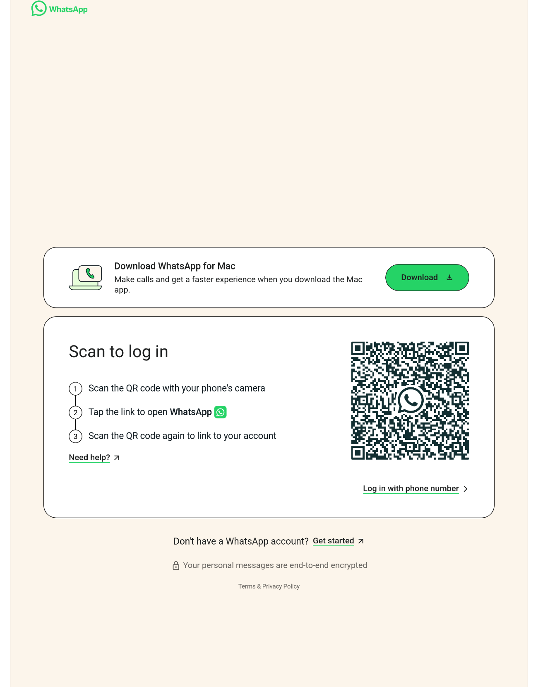

# a native tauri client
WhatsApp, wrapped for the Linux desktop.
Walz puts WhatsApp Web in a real window with a tray icon, native notifications, and media keys, instead of a browser tab you have to hunt for. Built with Tauri and Rust.
# what you get
A window, not a tab
Same WhatsApp Web you already know, running as its own application with its own window chrome, icon, and process.

# src-tauri/src
What's actually wired up
Each one is a real module in the source tree, not a marketing claim.
Tray icon and unread badge
See how many chats are waiting without opening the window. Click to show, hide, or quit.
Notifications and Do Not Disturb
Click a notification to jump straight to the chat. One toggle mutes everything, including download alerts, and remembers itself across restarts.
Media key controls
Play, pause, and seek voice messages from your keyboard or your desktop's media widget.
Separate profiles
Run walz --profile work next to your default session. Each profile gets its own data directory and its own window.
Paste and drag files in
Images and files copied from your file manager land in the chat box, not just inside the browser sandbox.
Follows your system theme
Dark or light, synced from your desktop's own appearance setting.
# get it running
Install
Pick one. All of them end with a walz binary on your machine.
curl -fsSL https://raw.githubusercontent.com/alex-oleshkevich/walz/master/install.sh | bashDownloads the latest release and installs it to ~/.local/bin. No sudo. Linux x86_64 only for now.
git clone https://github.com/alex-oleshkevich/walz.git
cd walz
makepkg -siBuilds from the PKGBUILD in this repository. Not on the AUR yet.
git clone https://github.com/alex-oleshkevich/walz.git
cd walz
npm install
npm run tauri buildNeeds Rust, Node.js, and webkit2gtk-4.1.